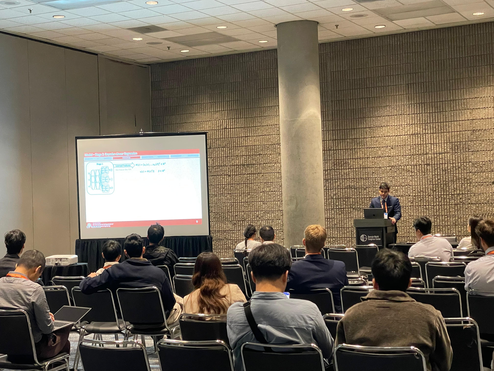
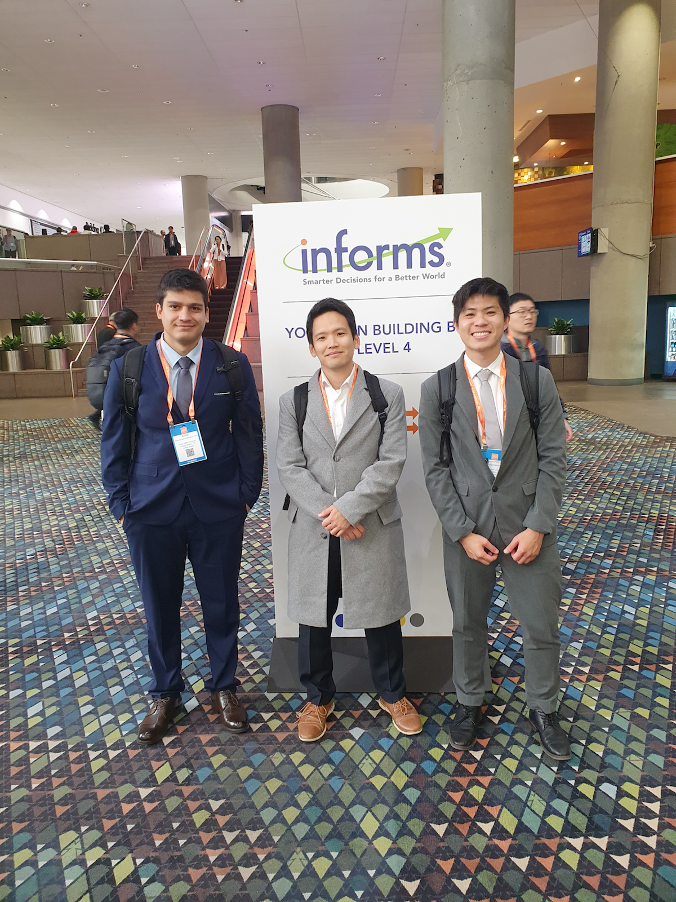
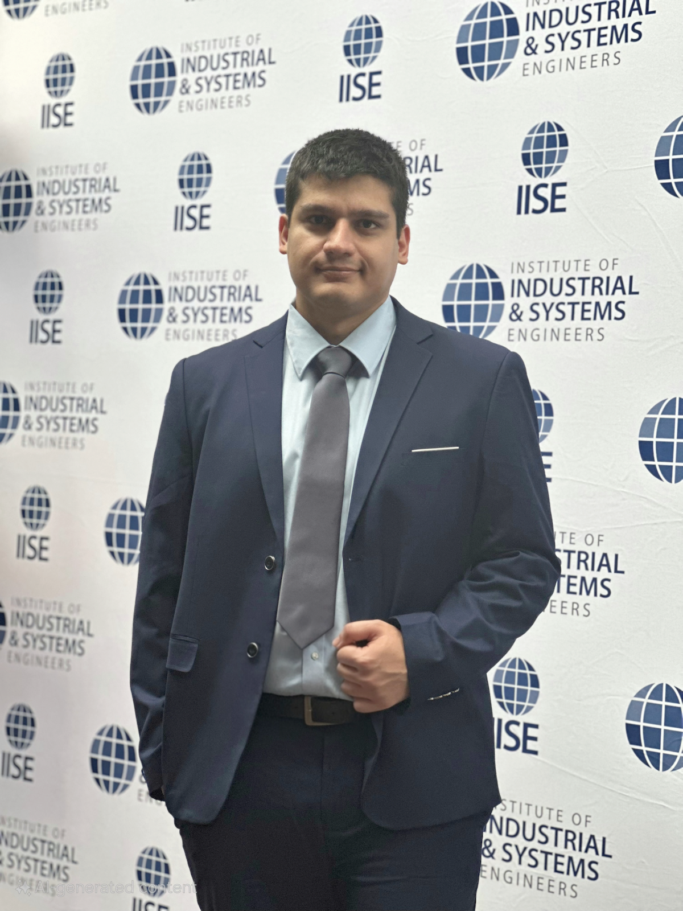
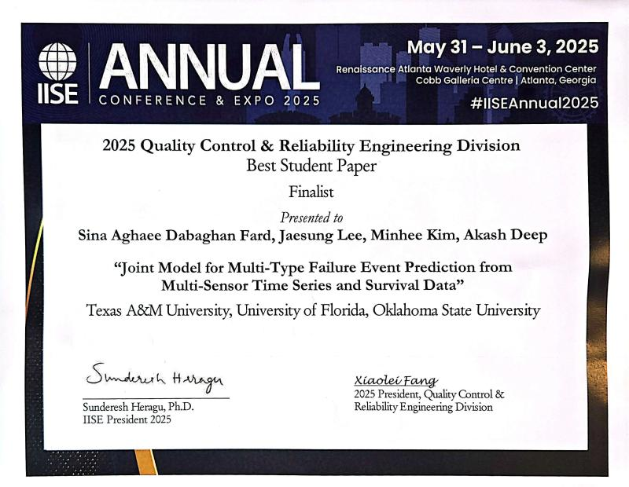
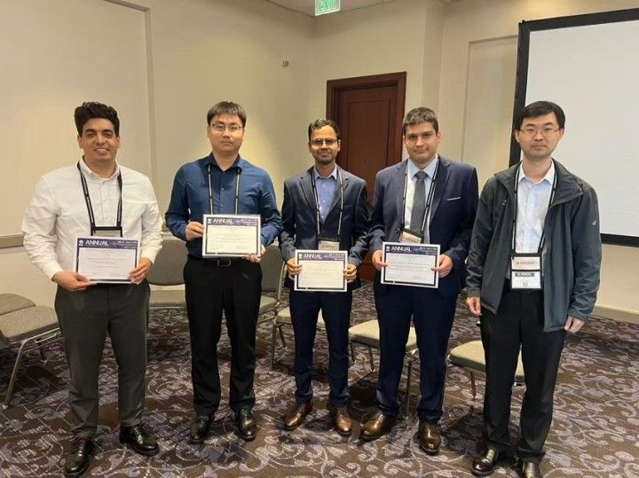
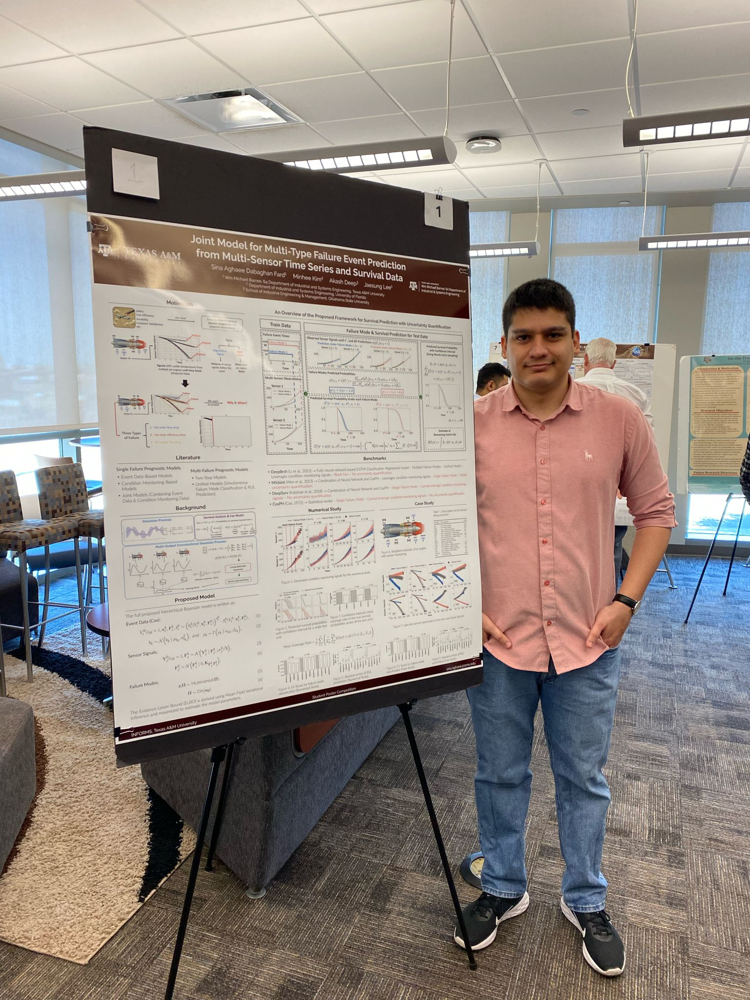
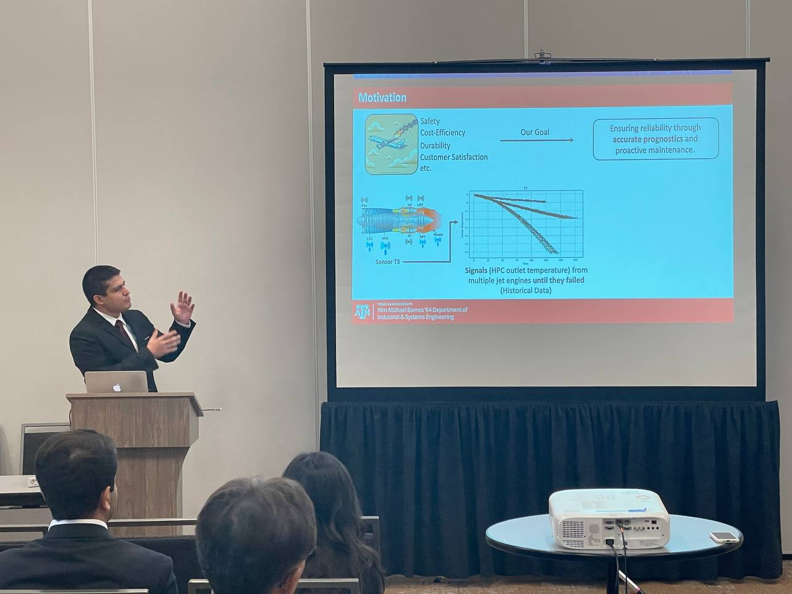
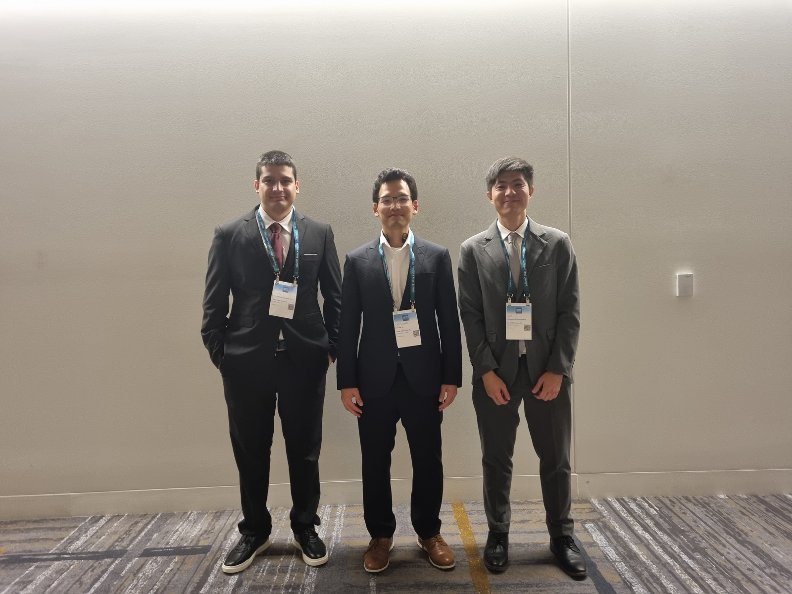
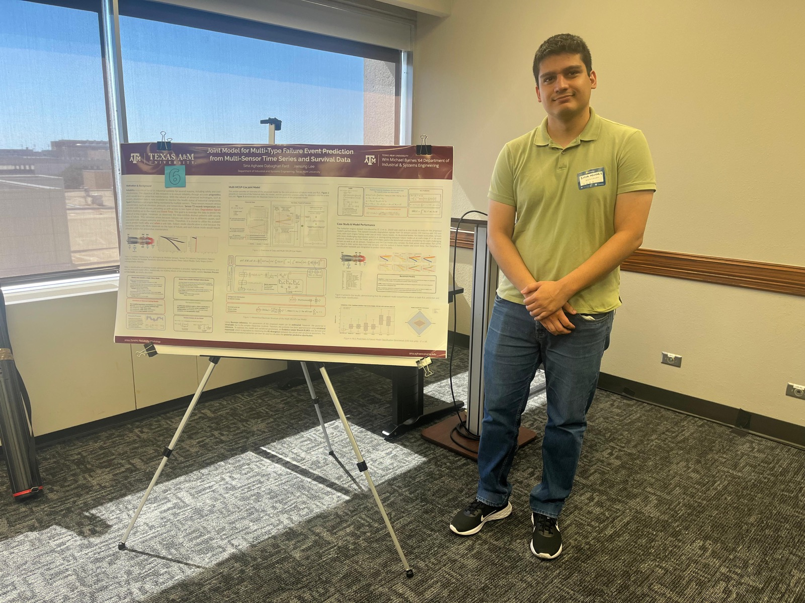

Conference Presentation
INFORMS Annual Meeting 2025
Presented our research P2 in oral format at INFORMS 2025 and connected with fellow researchers.
Group photo: In the last photo, from left to right, are me, my PhD advisor Dr. Jaesung Lee, and my colleague and labmate, Tatthapong Srikitrungruang.
October 2025 | Atlanta, GA, USA



Conference Presentation
IISE Annual Conference & Expo 2025
Presented our research J2 at the IISE Annual Conference & Expo 2025 as a finalist in the QCRE Best Student Paper Competition.
Group photo: The last photo includes the finalists and QCRE President-Elect Dr. Xiaowei Yue; I am second from the right.
June 2025 | Atlanta, GA, USA


Poster Presentation
TAMU ISEN Poster Competition
Presenting a poster of our research J2 at the Texas A&M ISEN Poster Competition.
Discussion photo: The last photo shows me presenting my poster to Dr. Lewis Ntaimo, then head of the ISEN department and a judge in the competition.
March 2025 | College Station, TX, USA




Conference Presentation
INFORMS Annual Meeting 2024
Presented our research J2 in both oral and poster formats at INFORMS 2024 and connected with fellow researchers.
Group photo: In the last photo, from left to right, are me, my PhD advisor Dr. Jaesung Lee, and my colleague and labmate, Tatthapong Srikitrungruang.
October 2024 | Seattle, WA, USA

Poster Presentation
Zorich Reliability Workshop
Presenting a poster of our research J2 at Texas A&M's Zorich Reliability Workshop, my first poster presentation as a PhD student.
September 2024 | College Station, TX, USA